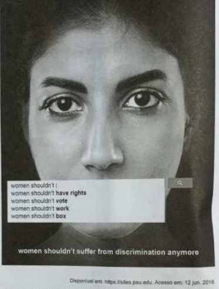
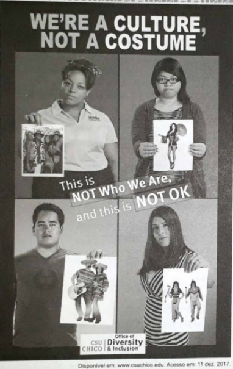

Questão 16 (enem 2020)

A) criticar o tipo de tratamento dado à mulher.
B) rever o desempenho da mulher no trabalho.
C) questionar a sobrecarga de atribuições da mulher.
D) analisar as pesquisas acerca dos direitos da mulher.
E) censurar a mulher pelo uso de determinadas palavras.
Mostrar resposta
Alternativa correta: Letra A
Questão 17 (enem 2020)

A) estereotipar povos de certas culturas.
B) discriminar hábitos de grupos minoritários.
C) banir imigrantes de determinadas origens.
D) julgar padrões de beleza de diversas etnias.
E) desvalorizar costumes de algumas sociedades.
Mostrar resposta
Alternativa correta: Letra A
Questão 18 (enem 2020)
A Mother in a Refugee Camp No Madonna and Child could touch Her tenderness for a son She soon would have to forget... The air was heavy with odors of diarrhea, Of unwashed children with washed-out ribs And dried-up bottoms waddling in labored steps Behind blown-empty bellies. Other mothers there Had long ceased to care, but not this one: She held a ghost-smile between her teeth, and in her eyes the memory Of a mother’s pride... She had bathed him And rubbed him down with bare palms. She took from their bundle of possessions A broken comb and combed The rust-colored hair left on his skull And then — humming in her eyes — began carefully [to part it. In their former life this was perhaps A little daily act of no consequence Before his breakfast and school: now she did it Like putting flowers on a tiny grave. ACHEBE, C. Collected Poems. New York: Anchor Books, 2004.
A) demonstração de orgulho por não precisar pedir doações.
B) descrições artísticas detalhadas de uma obra conhecida.
C) aceitação de um diagnóstico de doença terminal do filho.
D) consternação ao visitar o túmulo do filho recém-falecido.
E) impressões sensoriais experimentadas no ambiente.
Mostrar resposta
Alternativa correta: Letra E
Questão 19 (enem 2020)
A Minor Bird I have wished a bird would fly away, And not sing by my house all day: Have clapped my hands at him from the door When it seemed as if I could bear no more. The fault must partly have been in me. The bird was not to blame for his key. And of course there must be something wrong In wanting to silence any song. FROST, R. West-running Brook. New York: Henry Holt and Company, 1928.
A) culpa por não poder cuidar do pássaro.
B) atitude errada por querer matar o pássaro.
C) necessidade de entender o silêncio do pássaro.
D) sensibilização com relação à natureza do pássaro.
E) irritação quanto à persistência do canto do pássaro.
Mostrar resposta
Alternativa correta: Letra D
Questão 20 (enem 2020)
Finally, Aisha finished with her customer and asked what colour Ifemelu wanted for her hair attachments. “Colour four.” “Not good colour,” Aisha said promptly. “That’s what I use.” “It look dirty. You don’t want colour one?” “Colour one is too black, it looks fake,” Ifemelu said, loosening her headwrap. “Sometimes I use colour two, but colour four is closest to my natural colour.” [...] She touched Ifemelu’s hair. “Why you don’t have relaxer?” “I like my hair the way God made it.” “But how you comb it? Hard to comb,” Aisha said. Ifemelu had brought her own comb. She gently combed her hair, dense, soft and tightly coiled, until it framed her head like a halo. “It’s not hard to comb if you moisturize it properly,” she said, slipping into the coaxing tone of the proselytizer that she used whenever she was trying to convince other black women about the merits of wearing their hair natural. Aisha snorted: she clearly could not understand why anybody would choose to suffer through combing natural hair, instead of simply relaxing it. She sectioned out Ifemelu’s hair, plucked a little attachment from the pile on the table and began deftly to twist. ADICHIE, C. Americanah: A novel. New York: Anchor Books, 2013.
A) reforçam um padrão de beleza.
B) retratam um conflito de gerações.
C) revelam uma atitude de resistência.
D) demonstram uma postura de imaturidade.
E) evidenciam uma mudança de comportamento.
Mostrar resposta
Alternativa correta: Letra C